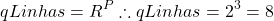

Salvação: Importa ser Perfeito?
O assunto de ser perfeito tem levado a igreja à décadas de discussão e é tão tolo e desnecessário que, deve-se admitir, foi inserido na igreja pelo próprio Satanás para distrair seus servos do principal: prepara-se para encontrar Jesus nas nuvens. Neste, demonstrar-se-á matematicamente que tal assunto não importa.
Conteúdo
Tabela Verdade
Explicando melhor, existe um conceito de lógica matemática que permite validar afirmações, identificando se tais afirmação são lógicas e coerentes. Por meio da tabela verdade, um método de verificação lógica da matemática, é possível comprovar que o assunto não importa. Para entender o que é a tabela verdade, como funciona e como usá-la acesse este artigo, pois aqui será apenas aplicado seu conceito.
Para o presente problema há uma premissa notória, que é a perfeição. É ou não possível ser perfeito? É isso que se deseja responder. Mas há outras premissas inerentes ao problema. Por exemplo, é necessário a atuação de Deus, mediante o Espírito Santo? Provavelmente a maioria, senão todos, crendo ou não no perfeccionismo, responderão que sim. Mas independentemente de crer ou não na necessidade do Espírito Santo este é um ponto importante; para atingir a perfeição é necessário o Espírito Santo? Outra premissa extremamente importante é o oposto: há necessidade de esforço humano ou atuação do ser humano?
Portanto, tem-se 3 premissas para a salvação: Espirito Santo, Esforço Humano e Perfeição. Montando a tabela verdade, tem-se:
(1) 
| Esforço Humano | Espírito Santo | Perfeição | É possível? | |
| 1 | Falso | Falso | Falso | |
| 2 | Falso | Falso | Verdade | |
| 3 | Falso | Verdade | Falso | |
| 4 | Falso | Verdade | Verdade | |
| 5 | Verdade | Falso | Falso | |
| 6 | Verdade | Falso | Verdade | |
| 7 | Verdade | Verdade | Falso | |
| 8 | Verdade | Verdade | Verdade |
O objetivo é saber se a combinação “E” de cada linha é ou não possível e mais, se é ou não necessária para a salvação. Para tanto, tem-se que estabelecer as 3 (três) perguntas no que diz respeito a salvação. Assim, para ser salvo:
- É necessário Esforço humano?
- É necessário o Espírito Santo?
- É necessário ser Perfeito?
Respondendo
Para responder estas questões, será usado dois conceitos: a Sola Scriptura e o Espírito de Profecia. No primeiro, usar-se-á apenas a bíblia como fonte para responder as questões. Já no segundo, serão usados apenas os escritos do espírito de profecia. Então, se o leitor não crê no espírito de profecia tal como está revelado em Apocalipse 14:12, Atos 2:17 e I Coríntios 14:21, pule essa parte; porém, para aqueles que creem, devem considerar a bíblia e, o espírito de profecia, como uma luz a clarear os textos bíblicos.
Esforço Humano
É necessário esforço humano para obter a salvação, ou melhor, para ser salvo, ou ainda, para entrar no céu? A resposta a esta pergunta é essencial para definir a participação do homem no processo de salvação e, para responder se é ou não possível ser perfeito.
Apenas a Bíblia
Usando o conceito de Sola Scriptura, o que a bíblia e a bíblia somente, tem a dizer acerca do assunto?
Provavelmente o texto que primeiro virá a mente da maioria será o texto de Josué, em que DEUS exorta-o a permanecer e não desanimar:
Não to mandei eu? Sê forte e corajoso; não temas, nem te espantes, porque o SENHOR, teu Deus, é contigo por onde quer que andares.
Bíblia. ARA. Josué 1:9[1]
É evidente que o contexto imediato deste versículo bíblico é a conquista de Canaã, então, este texto trata diretamente do esforço de guerra; contudo, não se limite a ela. Na realidade, se lidos os textos anteriores, percebe-se que o assunto também é acerca de obedecer à Deus e os Seus mandamentos:
Tão-somente esforça-te e tem mui bom ânimo, para teres o cuidado de fazer conforme a toda a lei que meu servo Moisés te ordenou; dela não te desvies, nem para a direita nem para a esquerda, para que prudentemente te conduzas por onde quer que andares. 8 Não se aparte da tua boca o livro desta lei; antes medita nele dia e noite, para que tenhas cuidado de fazer conforme a tudo quanto nele está escrito; porque então farás prosperar o teu caminho, e serás bem sucedido.
Bíblia. ACF. Josué 1:7-8[2]
Evidentemente, DEUS, diz abertamente para esforça-se, para cumprir o mandado DELE, o que incluir a obediência e pregação da Lei.
É claro também que este texto não diz que a salvação está condicionada à obediência. Perceba, Israel foi cativo do Egito por aproximadamente 400 anos e, ainda quando eram escravos, e por consequência, transgressores da lei de Deus por força da escravidão, eles foram libertos. Deus os libertou não por O obedecerem, mas por amor[3]. Contudo, ainda que a libertação do Egito fosse gratuita e puramente por amor, não significava que eles não precisariam mais obedecer à DEUS, pelo contrário, agora ainda mais, por constrangimento[4] deveriam obedecer Aquele que por amor e gratuitamente os libertou. A graça salvadora e misericordiosa de Cristo sempre existiu!
De igual modo ao antigo Israel, “Cristo, quando nós ainda éramos fracos, morreu a seu tempo pelos ímpios“[5], ainda “quando inimigos, fomos reconciliados com Deus mediante a morte do seu Filho“[6]. Não foi por ser bonzinhos e obedientes que Cristo morreu na Cruz e salvou a humanidade, mas apenas por amor[7]. Deus salva o homem não pela obediência deste, mas por amor que ELE tem. A contra ponto, porem, igualmente ao antigo Israel, Deus pede aos homens obediência, não para ser salvos, pois já foram, mas em resposta ao grande amor de Cristo por eles[4].
A bíblia é repleta de passagens onde DEUS ordena que seu povo O obedeça a ponto de, simplesmente, se tornar exaustivo elencar todas.
Guarda, pois, os mandamentos, e os estatutos, e os juízos que hoje te mando cumprir.
Bíblia. ARA. Deuteronômio 7:11[8]
Se me amais, guardareis os meus mandamentos.
Bíblia. ARA. João 14:15[9]
É muito claro que DEUS salva o homem sem que este O obedeça. Mas também é muito claro que, uma vez salvo, Deus pede ao homem para que O obedeça. Não apenas pede, mas condiciona suas promessas, inclusive da salvação, na permanência[10][11][12][13][14][15] em obedecê-LO. É muito claro que as promessas de DEUS são acompanhados do termo “se“, indicando que se trata de um pacto, ou seja, um contrato entre duas partes, que implica em “obrigação” das partes: se o homem cumprir sua parte, então DEUS cumprirá a Dele.
Será, pois, que, SE, ouvindo estes juízos, os guardares e cumprires, o SENHOR, teu Deus, te guardará a aliança e a misericórdia prometida sob juramento a teus pais;
Bíblia. ARA. Deuteronômio 7:12[16]
Assim, pois, como diz o Espírito Santo: Hoje, se ouvirdes a sua voz, 8 não endureçais o vosso coração como foi na provocação, no dia da tentação no deserto
Bíblia. ARA. Hebreus 3:7-8[17]
Num certo momento, DEUS perdoou os pecados de uma mulher adultera. ELE disse literalmente à ela: “Eu também não a condeno“[18]. Deus perdoou aquela mulher ainda quando era prostitua, de forma gratuita, mas uma vez perdoada, ELE continuou a dizer para ela: “Agora vá e abandone sua vida de pecado“[18]. Não cobrou dela obediência para perdoá-la e salvá-la, porém, uma vez salva, ELE cobrou dela que abandonasse o pecado. Ou seja, ELE não a salvou para que continuasse pecando. Deus não salva o homem do pecado, para que ele continue pecando.
Isso é muito fácil de ser ilustrado. Hoje, no Brasil, uma dos poucos crimes que ainda mantém uma pessoa na cadeia é o de deixar de pagar pensão alimentícia. A lei não é ruim, pelo contrário, a lei é boa[19] como a bíblia declara, isso porque ela é que mostra onde está a falha, e, por isso, permite que haja correção. Mas, se um indivíduo que deve pagar pensão deixa de fazer, então a lei o condena, não por ela ser ruim, mas porque o indivíduo fez o que era ruim. A lei condena a pessoa à prisão e, até 2020, somente pode ser solto após pagar a pensão.
Agora, este indivíduo está errado, ele fez o mal. Ele realmente tem que pagar pelo mal que fez. Mas uma pessoa, como parente ou amigo, decide pagar a pensão, logo, o indivíduo poderá ser solto. Uma pessoa que não tem nada a ver com o problema, literalmente, pagou pelo que o criminoso deveria ter pago. É exatamente o que JESUS fez pela humanidade. Ao pecar, a humanidade precisa ser punida, a lei condena a homem pecador[20], e o pagamento, ou seja, a punição pelo pecado é a morte[21]. Mas um outro ser, JESUS, veio e pagou o preço do pecado – a morte.
No entanto, voltando ao exemplo do criminoso que não pagou a pensão alimentícia. Quanto este amigo ou parente paga a pensão no lugar do criminoso, ele paga para que o criminoso continue a cometer o crime ou para que ele fique livre? É claro que é para livrá-lo da cadeia. O objetivo é que, este criminoso, agora livre, nunca mais deixe de pagar a pensão. Ninguém pagaria a pensão em seu lugar, simplesmente para que o criminoso continuasse devendo a pensão. Não faria sentido algum.
Pagar a pensão no lugar do criminoso, NÃO deixa o criminoso livre para continuar devendo a pensão. Pagar a pensão atrasada, não é o mesmo que isentar o criminoso da responsabilidade de pagar a pensão. Após sair da cadeia, compete ao ex-criminoso, agora liberto, permanecer correto, pagando mensalmente a pensão. Contudo, caso não cumpra a lei, voltará a ser culpado e, voltará para a cadeia. Assim é com a salvação de CRISTO.
Ao perdoar a mulher adultera, JESUS não deu aval para que ela continuasse adulterando, pelo contrário, o perdão veio de graça, mas a salvação dela dependeria dela permanecer pura do pecado, da mesma forma que a liberdade do ex-criminoso (ex-culpado) depende de o mesmo continuar obedecendo a lei. O pagamento da pensão pelo amigo e do pecado por Cristo não é um passaporte para uma vida de crimes e pecado.
O que isso significa? Significa que a bíblia é clara em dizer que a salvação é de graça, que JESUS perdoa gratuitamente, porém, após ser perdoado, a pessoa deve permanecer obediente, para permanecer salva, do contrário, a pessoa volta a ser pecadora (culpada), necessitando de novo perdão.
Então a conclusão invariável a que se chega é SIM, há a necessidade de esforço para a salvação. Não porque o sacrifício de CRISTO seja insuficiente ou ineficiente, mas “porque somos criação de Deus realizada em Cristo Jesus PARA fazermos boas obras“[22]. DEUS salva, mas permanecer salvo é uma questão de NÃO possuir pecado, pois no céu “nunca jamais penetrará coisa alguma contaminada, nem o que pratica abominação e mentira“[23]. Toda vez que o homem peca ele deixa de estar salvo, necessitando novamente do perdão divino.
O esforço humano é o de permanecer salvo, ou seja, permanecer na prática de boas obras[22]. O esforço do homem é em permanecer guardando os mandamentos de DEUS, assim como JESUS guardava, pois é dever de todo cristão andar como Cristo andou[24].
Portanto, sede vós perfeitos como perfeito é o vosso Pai celeste.
Bíblia. ARA. Mateus 5:48[25]
Não é chegado o momento ainda deste artigo definir se é ou não possível ser perfeito, contudo, independente de ser possível ou não, JESUS ordena que a humanidade seja perfeita, ou, ao menos, que busque diligentemente alcançar a perfeição. Só o fato de JESUS pedir ou ordenar que o homem seja perfeito, já diz que este não é SEU trabalho, do contrário, ELE teria feito o mesmo que fez com o leproso[26].
Se fosse atribuição divina o tornar o homem perfeito, então, JESUS não teria dito ao homem para ser perfeito, mas teria dito “Quero, sê perfeito“, e o homem teria se tornado perfeito, por SEU exclusivo poder. Se fosse atribuição de DEUS fazer o homem não mais pecar, JESUS não teria pedido à adultera: “Agora vá e abandone sua vida de pecado“[18], pelo contrário, teria determinado, tornando a vida dela uma vida sem pecado. O mesmo DEUS que com SUA palavra[27][28] fez num instante céus e terra e à distância curou, com apenas uma palavra, o servo enfermo do centurião[29], é o mesmo DEUS que simplesmente por sua palavra, tornaria perfeita a mulher adultera.
O papel de CRISTO na salvação é unicamente o de pagar o preço do pecado e conceder perdão. ELE não fará o homem abandonar[18] o pecado, ser perfeito[25] ou andar como ELE andou[24]. Isso compete ao homem.
Mas não é para desesperar-se, se o homem voltar a pecar, DEUS dá esperança:
Meus filhinhos, escrevo-lhes estas coisas para que vocês não pequem. Se, porém, alguém pecar, temos um intercessor junto ao Pai, Jesus Cristo, o Justo.
Bíblia. ARA. I João 2:1[30]
Em outras palavras, se o homem voltar a pecar, existe um JESUS pronto a perdoar.
Confira alguns outros textos que confirmam a necessidade de esforço humano:
esforçai-vos, pois, muito para guardardes e cumprirdes tudo quanto está escrito no Livro da Lei de Moisés, para que dela não vos aparteis, nem para a direita nem para a esquerda;
Bíblia. ARA. Josué 23:6[31]
Desde os dias de João Batista até agora, o reino dos céus é tomado por esforço, e os que se esforçam se apoderam dele.
Bíblia. ARA. Mateus 11:12[32]
Respondeu-lhes [Jesus]: esforçai-vos por entrar pela porta estreita, pois eu vos digo que muitos procurarão entrar e não poderão.
Bíblia. ARA. Lucas 13:24[33]
Não torneis a ninguém mal por mal; esforçai-vos por fazer o bem perante todos os homens;
Bíblia. ARA. Romanos 12:17[34]
Rogo-vos, pois, eu, o prisioneiro no Senhor, que andeis de modo digno da vocação a que fostes chamados, 2 com toda a humildade e mansidão, com longanimidade, suportando-vos uns aos outros em amor, 3 esforçando-vos diligentemente por preservar a unidade do Espírito no vínculo da paz;
Bíblia. ARA. Efésios 4:1-3[35]
Ora, é para esse fim que labutamos e nos esforçamos sobremodo, porquanto temos posto a nossa esperança no Deus vivo, Salvador de todos os homens, especialmente dos fiéis.
Bíblia. ARA. I Timóteo 4:10[36]
Esforcemo-nos, pois, por entrar naquele descanso, a fim de que ninguém caia, segundo o mesmo exemplo de desobediência.
Bíblia. ARA. Hebreus 4:11[37]
Todos o textos supra deixam muito claro e nítido a necessidade de esforço humano. A conclusão, portanto, não poderia ser outra. É necessário esforço humano, NÃO para ser salvo, pois a salvação não advêm “de obras, para que ninguém se glorie“, a salvação “não vem de vós; é dom de Deus;“[38], contudo, uma vez salvo, compete ao homem buscar uma vida perfeita, imaculada, isenta de pecado; pois “somos criação de Deus realizada em Cristo Jesus PARA fazermos boas obras“[39]. E isso não poderia mesmo ser diferente, já que “sem fé é impossível agradar a Deus“[40] e uma “fé sem obras é morta“[41], portanto, a ausência de obras (uma vida de obediência), significa a inexistência de fé (fé morta), logo, como não há fé, tal pessoa não pode alcançar à DEUS e a salvação.
Perceba que esforço humano é inútil para conquistar a salvação, pois ela é obtida exclusivamente por Cristo, porém, sem o esforço humano (obras que são fruto da fé) é impossível agradar a Deus e permanecer salvo. Portanto, o esforço humano não salva, mas ele mantém salvo, assim esforço humano faz parte do processo de salvação, mas não salva.
Espírito de Profecia
Se você acredita no espírito de profecia conforme consta em Apocalipse 14:12, Atos 2:17 e I Coríntios 14:21, então, segue o que o mesmo tem a dizer sobre o assunto.
Deus não muda[42][43], portanto, ELE não se contradiz, independentemente se ELE falar por meio de Pedro ou Daniel, de João ou de Moisés, de Paulo ou Ellen, no final, os homens são apenas instrumentos, como lápis, nas mas de DEUS, a vóz é DELE. Por isso, Ellen White também reafirma o que a bíblia já disse: o esforço humano é essencial para a salvação, mas inútil para conquistá-la:
Cristo, só Cristo e Sua justiça, obterão para nós um passaporte ao Céu.
[1] Eventos Finais – A vida devocional do remanescente. Página 208/284. Citando Carta 6b, 1890
O coração orgulhoso esforça-se por alcançar a salvação; mas tanto o nosso título ao Céu, como nossa idoneidade para ele, encontram-se na justiça de Cristo. O Senhor nada pode fazer para a restauração do homem enquanto ele, convicto de sua própria fraqueza e despido de toda presunção, não se entrega à guia divina. Pode então receber o dom que Deus está à espera de conceder.
O Desejado de Todas as Nações – O sermão da montanha. Página 250/206
Obras jamais nos salvarão; são os méritos de Cristo que têm valor. Pela fé nEle, Cristo tornará todos os nossos imperfeitos esforços aceitáveis a Deus.
[2] Reavivamento e seus Resultados – Equilíbrio entre fé e obras. Página 31/21.
Evidentemente, o espírito de profecia diz abertamente, esforço humano não salva, mas ele continua afirmando – compatível com a bíblia – que, embora não salve, ele faz parte do processo de salvação:
Oração e esforço, esforço e oração, serão a ocupação de vossa vida. Deveis orar como se a eficiência e o louvor fossem todos atribuíveis a Deus, e labutar como se o dever fosse todo vosso.
[1] Eventos Finais – A vida devocional do remanescente. Página 51/64. Citando Testimonies, vol. 4, pág. 538
Os pensamentos devem se concentrar em Deus. Devemos exercer diligente esforço para vencer as más tendências do coração natural. Nossos esforços, nossa abnegação e perseverança devem ser proporcionais ao infinito valor do objetivo que perseguimos. Unicamente vencendo como Cristo venceu, havemos de alcançar a coroa da vida.
[2] Reavivamento e seus Resultados – É ainda uma luta. Página 53/40.
Que ninguém pense que sem fervoroso esforço de sua parte poderá obter a certeza do amor de Deus. Quando por tão longo tempo se permitiu à mente repousar somente em coisas terrenas, é difícil mudar os hábitos do pensamento. Aquilo que os olhos vêem e os ouvidos escutam, demasiadas vezes atrai a atenção e absorve o interesse. Mas se quisermos entrar na cidade de Deus e olhar para Jesus e Sua glória, precisamos acostumar-nos, aqui, a contemplá-Lo com os olhos da fé. As palavras e o caráter de Cristo devem ser, freqüentemente, o assunto de nossos pensamentos e de nossa conversação; e, cada dia, algum tempo deve ser consagrado especialmente a devota meditação nestes temas sagrados.
[5] Santificação – O privilégio do cristão. Página 66/103.
Deus não pode, porém, operar por nós se não fizermos esforço algum. Se quisermos alcançar a vida eterna temos de trabalhar, e trabalhar fervorosamente.
[2] Reavivamento e seus Resultados – Equilíbrio entre fé e obras. Página 32/23.
Os profetas e apóstolos NÃO aperfeiçoaram o caráter cristão por milagre. Eles usaram os meios colocados por Deus ao seu alcance; e todos os que fizerem o mesmo esforço hão de conseguir os mesmos resultados.
[5] Santificação – O caráter Cristão. Página 60/93.
A vida de João foi uma vida de fervoroso esforço para conformar-se com a vontade de Deus. O apóstolo seguia tão de perto a seu Salvador e tinha tamanha compreensão da pureza e exaltada santidade de Cristo, que seu próprio caráter aparecia, em contraste, excessivamente defeituoso.
[5] Santificação – João no Exílio. Página 57/87.
Paulo operava sua salvação com temor e tremor; e não deveríamos nós temer que, tendo-nos sido deixada uma promessa, qualquer de nós deixe de alcançá-la, demonstrando-se indigno da vida eterna? Devemos vigiar e orar, lutar com desesperado esforço para entrar pela porta estreita. Não existe desculpa para o pecado, ou para a indolência. Jesus abriu o caminho, e deseja que Lhe sigamos as pegadas.
[2] Reavivamento e seus Resultados – Equilíbrio entre fé e obras. Página 32/22.
Quando a graça da mansidão é acariciada por aqueles que, naturalmente, são de uma disposição irritadiça e colérica, eles hão de empenhar os maiores esforços para subjugar seu infeliz temperamento.
[5] Santificação – A verdadeira e a falsa teoria comparadas. Página 13/17.
Jamais devemos repousar num estado de satisfação, e deixar de fazer progresso, dizendo: “Estou salvo.” Se é entretida esta ideia, deixam de existir os motivos para a vigilância, a oração, o esforço sincero em seguir para a frente, rumo de realizações mais elevadas. Nenhuma língua santificada será encontrada pronunciando essas palavras antes que venha Cristo, e entremos pelas portas da cidade de Deus.
[2] Reavivamento e seus Resultados – Equilíbrio entre fé e obras. Página 36/26.
Aqueles que se dizem cristãos devem sacudir a letargia que debilita seus esforços e enfrentar as solenes responsabilidades que repousam sobre eles. Todos os que fazem isto podem esperar que o poder de Deus se revele neles.
[5] Santificação – A fornalha ardente. Página 31/46.
Sem diligente labuta, não podemos esperar obter conhecimento de coisas espirituais.
[4] Mensagem aos jovens -Estudando a Bíblia. Página 237/260.
Devemos acostumar-nos a elevar muitas vezes os pensamentos a Deus em oração. Se a mente vagueia, devemos fazê-la retornar; mediante perseverante esforço, o hábito finalmente fará que isto seja fácil. Não podemos, por um momento, separar-nos de Cristo com segurança.
[5] Santificação – O privilégio do cristão. Página 67/104.
Temos de fazer, de nossa parte, tudo que pudermos para combater o bom combate da fé. Devemos lutar, labutar, empenhar-nos, esforçar-nos desesperadamente por entrar pela porta estreita. Temos de ter sempre o Senhor perante nós. De mãos limpas, coração puro, devemos procurar honrar a Deus em todos os nossos caminhos. […] Em certo sentido somos lançados sobre nossas próprias energias; devemos lutar fervorosamente por ser zelosos e arrepender-nos, limpar as mãos e purificar o coração de toda mancha; devemos alcançar a mais alta norma, crendo que Deus nos ajudará em nossos esforços. Devemos buscar, se quisermos achar, e buscar com fé; temos de bater, para que a porta se abra. A Bíblia nos ensina que tudo que se relaciona com a nossa salvação depende de nosso próprio procedimento. Se perecermos, a responsabilidade repousará inteiramente sobre nós mesmos. Se foi tomada providência, e se aceitamos as condições apresentadas por Deus, podemos apropriar-nos da vida eterna. Temos de ir a Cristo com fé, temos de procurar com diligência confirmar nossa vocação e eleição.
[2] Reavivamento e seus Resultados – Equilíbrio entre fé e obras. Página 30/21.
Podemos crescer na graça aperfeiçoando-nos pela graça que já possuímos. Devemos conservar-nos imaculados do mundo, se é que queremos ser achados irrepreensíveis no dia de Deus. Fé e obras vão de mãos dadas, agem harmoniosamente na obra de alcançarmos a vitória. Obras sem fé são mortas, e morta é a fé sem as obras.
[2] Reavivamento e seus Resultados – Equilíbrio entre fé e obras. Página 31/21.
Uma vez formada a união com Cristo, só pode ser preservada mediante fervorosa oração e esforço incansável. Temos de resistir, temos de negar-nos, temos de vencer o próprio eu. Pela graça de Cristo, pelo ânimo, pela fé, pela vigilância, podemos alcançar a vitória.
[2] Reavivamento e seus Resultados – Salvo unicamente “em Cristo”. Página 39/28. Citando Testimonies for the Church 5:228-231.
A vida cristã é uma batalha e uma marcha. Nesta guerra não há trégua; o esforço deve ser contínuo e perseverante. […] Ninguém será levado para o alto sem árduo e perseverante esforço em prol de si mesmo. Todos têm de se empenhar por si nessa luta; nenhuma outra pessoa pode combater os nossos combates.
[2] Reavivamento e seus Resultados – Salvo unicamente “em Cristo”. Página 51/38 e 51/39.
Aquele que deseja tornar-se filho de Deus tem de receber a verdade de que o arrependimento e o perdão devem ser obtidos por meio de nada menos que a expiação de Cristo. Certo disto, o pecador tem de fazer um esforço em harmonia com a obra feita em seu favor,
[2] Reavivamento e seus Resultados – Como ser um cristão renascido. Página 20/13.
O homem orará e vigiará, e abandonará seus pecados, tornando manifesta sua sinceridade pelo vigor de seu esforço para obedecer aos mandamentos de Deus. Com a oração ele misturará a fé, e não só crerá nos preceitos da lei, mas também lhes obedecerá.
[2] Reavivamento e seus Resultados – Como ser um cristão renascido. Página 20/13.
Não se podem endireitar os erros, nem operar reformas na conduta mediante alguns fracos e intermitentes esforços… Sem contínuo esforço e atividade constante, não pode haver progresso nem ganho da coroa da vitória.
[2] Reavivamento e seus resultados – É ainda uma luta. Página 50/38.
As preciosas graças do Espírito Santo não se desenvolvem num momento. Ânimo, fortaleza, mansidão, fé e inabalável confiança no poder de Deus para salvar são adquiridos mediante a experiência de anos. Por uma vida de santo esforço e firme apego ao direito, devem os filhos de Deus selar seu destino.
[2] Reavivamento e seus Resultados – É ainda uma luta. Página 52/39.
O caráter não é obra do acaso. Não é determinado por uma explosão de temperamento, um passo dado em direção errada. É a repetição dos atos que faz com que isto se torne um hábito, moldando o caráter para o bem ou para o mal. Um caráter reto não se forma senão por meio de perseverante, incansável esforço, pelo aproveitamento de todo talento e aptidão de que se foi dotado para a glória de Deus.
[4] Mensagem aos jovens -Caráter aprovado. Página 150/164.
Ninguém pense que tem o direito de cruzar os braços e não fazer nada. Que alguém possa SER SALVO estando na indolência e inatividade, é uma completa impossibilidade. Pensai no que Cristo fez durante Seu ministério terrestre. Quão fervorosos, quão incansáveis foram Seus esforços! Não permitia que coisa alguma O desviasse do trabalho que Lhe fora dado. Estamos nós seguindo Suas pisadas? Ele abandonou tudo, para executar o plano de misericórdia de Deus pela raça caída.
[3] O ColportorEvangelista – Serviço Cristão. Página 78/64. Citando The Review and Herald, 20 de Janeiro de 1903
Atualizando a Tabela
Conforme visto, pode-se considerar todas as linhas que não consideram o Esforço Humano necessário como erradas. Atualizando, a tabela fica assim:
| Esforço Humano | Espírito Santo | Perfeição | É possível? | |
| 1 | Falso | Falso | Falso | Não |
| 2 | Falso | Falso | Verdade | Não |
| 3 | Falso | Verdade | Falso | Não |
| 4 | Falso | Verdade | Verdade | Não |
| 5 | Verdade | Falso | Falso | |
| 6 | Verdade | Falso | Verdade | |
| 7 | Verdade | Verdade | Falso | |
| 8 | Verdade | Verdade | Verdade |
Espírito Santo
Que o esforço humano é necessário para obter a salvação foi verificado; ele não é o suficiente, mas faz parte do processo, pois Quem de fato salva é Cristo; o esforço deve ser de permanecer salvo. Mas ainda resta uma dúvida, neste processo de salvação há a necessidade do Espírito Santo? É o objetivo agora, saber se é ou não necessário para a salvação, o Espírito Santo.
Apenas a Bíblia
Novamente, usando o conceito de Sola Scriptura, o que a bíblia e a bíblia somente, tem a dizer acerca do assunto?
Provavelmente, o primeiro texto que virá à mente é o de João:
…sem Mim [Jesus] nada podeis fazer.
Bília. ARA. João 15:5[44]
E de fato, parece que a bíblia é muito clara em afirmar que sem DEUS, independente de qual personalidade, Jesus, Deus Pai ou Espírito Santo, o homem não é capaz de nada.
porque Deus é quem efetua em vós tanto o querer como o realizar, segundo a sua boa vontade.
Bília. ARA. Filipenses 2:13[45]
Sem DEUS, o homem não pode fazer nada e, de fato, é ELE que efetua no homem, o “querer” e o “realizar“[45], como visto no texto supra.
A palavra grega traduzida como “efetua” no texto supra é ἐνεργῶν, que significa efetuar, trabalhar, produzir, trabalhar em, ser ativo em, ou provocar. Perceba que, considerando todas as possíveis traduções, o termo grego ἐνεργῶν traduzido como efetuar, NÃO tem o sentido de “tornar” ou “fazer“. isso significa que DEUS não faz o homem querer, ELE não faz o homem realizar. O sentido da palavra efetuar, está mais para DEUS “trabalha no” homem, ou ainda “atua no” homem, ou mesmo “provoca no” homem. O termo “efetuar” está correto, mas ele pode levar o leitor à má interpretação de que DEUS faz o homem querer, como se ELE o obrigasse, ou fizesse a despeito do homem. Mas não é isso que o texto diz. O texto diz que DEUS, provoca, instiga, inspira, age ou influência[46] o homem, afim de que ele “queira” e “realize“, ou seja, DEUS não induz ou faz o homem querer ou fazer algo; Deus não faz uma lavagem cerebral! É por isso que muitas pessoas se perderão, pois apesar de DEUS agir nelas, as mesmas recusam-se a ser instigadas, provocadas ou inspiradas à “querer” e “realizar” qualquer coisa contrária à sua própria vontade.
Mas o que este texto deixa claro é que é atribuição de DEUS e NÃO do homem, provocar o “querer” e provocar a disposição em “realizar“. Não há no homem estas coisas e, não é papel ou atribuição do homem buscar “querer” e nem tão pouco, buscar a disposição para “realizar” a vontade de DEUS. Isso é DEUS que faz!
Portanto, se é DEUS o responsável por agir no homem afim de provocá-lo à arrepender-se, a segui-LO e obedecê-LO; então, o homem será incapaz de “querer” qualquer destas coisas, inclusive querer esforçar-se, sem que DEUS, antes instigue-o à isso. Logo, sem DEUS, ou seja, sem o Espírito Santo, é impossível obter a salvação.
E mais, de igual forma, se é DEUS o responsável por agir no homem, de tal forma que o homem tenha disposição para “realizar” então, o homem será incapaz de realizar esforço, sem antes, DEUS agir nele.
Assim, o texto afirma ser necessário que o Espírito Santo aja, opere, trabalhe, provoque ou instigue o homem a não somente querer mas também esforçar-se em realizar, pois do contrário, o homem nunca jamais se esforçará para qualquer coisa pura.
Um outro texto, também de Filipenses, lança ainda maior luz ao tema:
Estou plenamente certo de que aquele que começou boa obra em vós há de completá-la até ao Dia de Cristo Jesus.
Bíblia. ARA. Filipenses 1:6[47]
Este texto também deixa muito claro que NÃO é atribuição ou responsabilidade do homem nem iniciar e nem concluir a obra de conversão ou de transformação, no próprio homem. O trabalho, ou melhor, o esforço de iniciar e concluir a obra no homem é atribuição exclusiva de DEUS! Ou seja, sem DEUS, Espírito Santo, o homem é incapaz de iniciar em si mesmo, a obra e, tão pouco de concluí-la.
Estes textos também evidenciam – por paradoxal que possa parecer – o esforço humano. Afinal, NÃO é DEUS que necessita querer ou realizar, é o homem que, mediante atuação divina, precisa “querer” e “realizar” – realizar é o mesmo que “fazer“. O ultimo texto também diz que é DEUS o responsável por iniciar e concluir, mas não diz que ELE é que dá prosseguimento à obra. Veja, a obra tem início, meio e fim, como tudo na vida. Ao homem compete a parte do “meio”, dar prosseguimento à obra iniciada por DEUS, até que ELE, a conclua em sua vinda[48]. Afinal, está implícito no texto que é a intenção de DEUS que o homem realize, ou seja, faça algo; e esse algo é justamente a continuação da obra iniciada por DEUS. ELE deseja que homem queira arrepender-se, queira obedecê-LO e queira segui-lo e, também que o homem de fato arrependa-se, obedecê-O e siga-O. É ELE que incute no homem estas coisas, mas é o homem que deve realizá-las, e não DEUS. Assim, SEM DEUS, não é possível ao homem realizar seu papel.
Um dos textos que deixam isso claro é o de romanos:
E não vos conformeis com este século, mas transformai-vos pela renovação da vossa mente, para que experimenteis qual seja a boa, agradável e perfeita vontade de Deus.
Bíblia. ARA. Romanos 12:2[49]
O que tem de tão especial neste texto é algo que provavelmente, poucos se atentam. Quem são as pessoas deste texto? Deus, por meio de Paulo, e os Romanos, certo? Deus diz: “transformai-vos”. Por que não disse: “deixe que EU os transforme“? Esta palavra esta literalmente dizendo que, o próprio homem deve transformar a si mesmo. E como faz isso? O texto explica, dizendo “pela renovação da vossa mente“. O homem é o responsável por si transformar. Esta NÃO é uma atribuição divina. É o próprio homem que deve fazer isso, esforçando-se para renovar a mente.
Eu sou a videira; vocês são os ramos. Se alguém permanecer em mim e eu nele, esse dará muito fruto; pois sem mim vocês não podem fazer coisa alguma.
Bíblia. ARA. João 15:15[50]
Repare em uma árvore qualquer, pois, embora Jesus tenha usado a videira para explicar seu conceito, o mesmo não depende do tipo de fruto produzido. Poderia ser uma laranjeira, uma figueira ou qualquer outra árvore frutífera. O ponto a que Cristo deseja chegar é que a capacidade de os galhos (ramos) viverem e produzirem fruto NÃO reside neles mesmo, pois, se NÃO estiverem conectados ao tronco e, por consequência à raiz, são incapazes de, por si mesmo, viverem e produzirem qualquer coisa. É a árvore que fornece a eles todos os elementos necessários não somente à vida do próprio galho, mas também para produção de frutos. É bem verdade que é o ramo e não o tronco ou a raiz que produz frutos, contudo, NÃO é o ramo que detém a seiva de vida para tal, mas sim a própria árvore.
Ninguém, desconectado de Cristo, e portanto do consolador, o Espírito Santo, pode produzir fruto e, não apenas isso, ninguém desconectado é capaz, de por si mesmo, viver, pois está desconectado daquele que é a fonte da existência, do amor, da bondade, ou seja, fonte de todos os elementos necessários à vida e à produção de frutos.
Há ainda, um outro detalhe muito importante, que é em realidade um desafio. Encontre um único galho que esforce-se para produzir frutos! Galhos NÃO se esforçam para produzir frutos. Há alguém que tenha ouviu um galho gemendo, fazendo força para produzir fruto? É óbvio que não! Isso porque, uma vez conectado à videira, lhe é natural produzi fruto. Não porque o galha é bom, ou haja nele mesmo, propriedade, mas é porque a conexão à árvore transmite “poder”, ou seja, a capacidade de produção de fruto tem muito mais a ver com à árvore do que com o galho.
Galho NÃO geme, pois, galho não se esforça nem faz força para dar fruto. O fruto, é o resultado natural da conexão à árvore: Jesus.
Sem conexão à árvore que é Cristo, é impossível produzir fruto!
A única conclusão possível é que sem o Espírito Santo, não é possível nem mesmo a obra de salvação e tão pouco a de transformação ser iniciada no homem, muito menos, concluída. Foi por isso que JESUS afirmou: “sem Mim nada podeis fazer“[44]; afinal é DEUS o “autor [início] e consumador [conclusão]” da fé“[51]
Espírito de Profecia
Novamente, se você acredita no espírito de profecia conforme consta em Apocalipse 14:12, Atos 2:17 e I Coríntios 14:21, então, segue o que o mesmo tem a dizer sobre o assunto.
Os esforços do homem, somente, são nada mais que nulidade; mas a cooperação com Cristo significa vitória.
[2] Reavivamento e seus Resultados – Equilíbrio entre fé e obras. Página 33/24.
Muitos têm a ideia de que devem fazer sozinhos parte do trabalho. Confiaram em Cristo para o perdão dos pecados, mas agora procuram por seus próprios esforços viver retamente. Mas qualquer esforço como este terá de fracassar. Diz Jesus: “Sem Mim nada podereis fazer.” João 15:5. Nosso crescimento na graça, nossa felicidade, nossa utilidade – tudo depende de nossa união com Cristo. É pela comunhão com Ele, todo dia, toda hora – permanecendo nEle – que devemos crescer na graça.
Caminho a Cristo – Crescimento em Cristo. Página 44/69
O coração orgulhoso esforça-se por alcançar a salvação; mas tanto o nosso título ao Céu, como nossa idoneidade para ele, encontram-se na justiça de Cristo. O Senhor nada pode fazer para a restauração do homem enquanto ele, convicto de sua própria fraqueza e despido de toda presunção, não se entrega à guia divina. Pode então receber o dom que Deus está à espera de conceder.
O Desejado de Todas as Nações – O sermão da montanha. Página 250/206
É-nos impossível, por nós mesmos, escapar ao abismo do pecado em que estamos mergulhados. Nosso coração é ímpio, e NÃO o podemos transformar. “Quem do imundo tirará o puro? Ninguém!” Jó 14:4. “A inclinação da carne é inimizade contra Deus, pois não é sujeita à lei de Deus, nem, em verdade, o pode ser.” Romanos 8:7. A educação, a cultura, o exercício da vontade, o esforço humano, todos têm sua devida esfera de ação, mas neste caso são IMPOTENTES. Poderão levar a um procedimento exteriormente correto, mas não podem mudar o coração; são incapazes de purificar as fontes da vida. É preciso um poder que opere interiormente, uma nova vida que proceda do alto, antes que os homens possam substituir o pecado pela santidade. Esse poder é Cristo. Sua graça, unicamente, é que pode avivar as amortecidas faculdades da alma, e atraí-la a Deus, à santidade.
Caminho a Cristo – A ponto sobre o abismo. Página 11/19
Quando quer, porém, que façam um esforço para reformar-se, movidos do desejo sincero de proceder bem, é sempre o poder de Cristo que os está atraindo. Uma influência para eles desconhecida lhes opera na alma, despertando-lhes a consciência, e sua vida exterior emenda-se.
Caminho a Cristo – Mudança de Rumo. Página 16/27 e 17/27
Tendes esperança de tornar-vos melhor mediante vossos próprios esforços? “Pode o etíope mudar a sua pele ou o leopardo as suas manchas? Nesse caso também vós podereis fazer o bem, sendo ensinados a fazer o mal.” Jeremias 13:23.
Caminho a Cristo – Mudança de Rumo. Página 19/31 e 19/31
Atualizando a Tabela
Conforme visto, pode-se considerar todas as linhas que não incluem o Espírito Santo como erradas, afinal, o que a bíblia e o espírito de profecia ensinam é que, deve haver uma cooperação entre DEUS e homem. Apenas um, sem o outro, não dará certo. Portanto, atualizando a tabela, fica assim:
| Esforço Humano | Espírito Santo | Perfeição | É possível? | |
| 1 | Falso | Falso | Falso | Não |
| 2 | Falso | Falso | Verdade | Não |
| 3 | Falso | Verdade | Falso | Não |
| 4 | Falso | Verdade | Verdade | Não |
| 5 | Verdade | Falso | Falso | Não |
| 6 | Verdade | Falso | Verdade | Não |
| 7 | Verdade | Verdade | Falso | |
| 8 | Verdade | Verdade | Verdade |
Importa ser Perfeito?
Até agora, apenas duas linhas da tabela restaram. Apenas duas possibilidades existem e, em ambas as possibilidades é preciso ter a cooperação entre o esforço humano e atuação DIVINA. Qualquer pessoa que creia ou ensine algo diferente estará, como verificado pela tabela verdade, no erro e mentindo.
Agora chega então, o grande momento em que é necessário definir se é ou não possível ser perfeito. Mas infelizmente haverá um desapontamento. Isso porque NÃO existe na bíblia um único texto sequer que afirme uma coisa ou outra. Existe sim, textos que dão a entende uma coisa e outros que dão a entender outra. O grande problema deste “dão a entender“, é que não passa de puro achismo, tornando-se tão somente uma questão pessoal. Ache um único texto que defina o problema, e toda a polêmica teria acabado e, inclusive, este artigo se tornaria inútil. A verdade e doutrinas, não podem jamais ser baseadas numa interpretação particular[52] das escrituras e, qualquer que defenda qualquer das posição, sem haver um claro “assim diz o Senhor“, está cometendo um terrível erro. A bíblia deve sempre, ser sua própria intérprete[53]. “As coisas encobertas pertencem ao SENHOR, nosso Deus, porém as reveladas nos pertencem, a nós e a nossos filhos, para sempre“[54]. Não compete ao homem ir além[55] daquilo que foi revelado e, se DEUS não revelou é porque NÃO IMPORTA para a salvação.
É necessário repetir, se DEUS não revelou, é porque NÃO IMPORTA para a salvação. E agora provar-se-á por meio da matemática.
Olhe a tabela verdade. Restam apenas duas linhas, sendo que a única diferença é que em uma, é possível ser perfeito e na outra não é possível, contudo em ambas, é necessário o Espírito Santo e o Esforço Humano, certo?
Então, que diferença faz ser ou não possível a perfeição? Em ambas as possibilidades, o homem terá que esforçar-se para permanecer em DEUS e sem pecar – isso é buscar a perfeição – e também, em ambos os casos, há necessidade do Espírito Santo. Esforço Humano e Espírito Santo são regras, independente de crer no perfeccionismo ou não.
Agora, se o homem tem que se esforçar de qualquer jeito e depende do Espírito Santo de qualquer forma, que importa ser ou não possível a perfeição? O leitor faria algo diferente se fosse possível? Se faria, significa que não está esforçando-se e, independente de ser ou não possível a perfeição, o leitor está perdido.
Não faz diferença para a vida do verdadeiro cristão a possibilidade de ser perfeito ou não. Em ambas as situações, o verdadeiro crente terá que se esforçar do mesmo jeito e dependerá do Espírito Santo do mesmo jeito. OU seja, o assunto NÃO importa, e por isso NÃO foi revelado, porque não fará diferença na conduta que o cristão deve ou não ter.
Apenas para reforçar o conceito, se há cooperação do esforço humano com a atuação do Espírito Santo então, se for possível ser perfeito, o homem será, porém, se não for possível, não importa quanto se esforce, o mesmo nunca será. Mas no final, a parte que compete ao homem é a de se esforçar, tudo o mais é futilidade para desviar a atenção do mais importante. Se estiver se esforçando realmente, esteja certo que o Espírito Santo fará a parte que LHE cabe, e haverá salvação.
Qualquer pessoa, líder, pastor, ou irmão leigo que discuta este assunto, almejando defini-lo, está indo além do que DEUS quer revelar e, portanto, está no erro – pra não dizer em pecado – e, deve ser ANÁTEMA[55]:
Mas, ainda que nós ou mesmo um anjo vindo do céu vos pregue evangelho que vá além do que vos temos pregado, seja anátema. 9 Assim, como já dissemos, e agora repito, se alguém vos prega evangelho que vá além daquele que recebestes, seja anátema.
Bíblia. Ara. Gálatas 1:8-9[55]
Veja como a Tabela Verdade termina:
| Esforço Humano | Espírito Santo | Perfeição | É possível? | |
| 1 | Falso | Falso | Falso | Não |
| 2 | Falso | Falso | Verdade | Não |
| 3 | Falso | Verdade | Falso | Não |
| 4 | Falso | Verdade | Verdade | Não |
| 5 | Verdade | Falso | Falso | Não |
| 6 | Verdade | Falso | Verdade | Não |
| 7 | Verdade | Verdade | Falso | Não importa |
| 8 | Verdade | Verdade | Verdade |
O Espírito de profecia
Definitivamente, a bíblia não define se é ou não possível a perfeição, porém o Espírito de Profecia define abertamente. Antes porém, é necessário fazer uma consideração.
Igualmente ao que acontece com a bíblia, há diversos textos do Espírito de Profecia que dão margem à um entendimento e outros que dão margem a outro, o que gera afincos debates. Contudo, DEUS não se contraria. E estes textos normalmente não afirmam de forma explícita, mas é o leitor que de forma subjetiva tira a conclusão a partir do texto lido, tentando entender as entrelinhas e comete um terrível erro.
Mas há sim, no Espírito de Profecia uma definição clara e aberta quanto ao tema, que como já visto, não faz diferença na vida e salvação do cristão.
Primeiro, antes de mostrar o texto é necessário um breve contexto. O grande dilema reside no fato de existir ou não uma natureza humana diferente, uma antes da queda, denominada pré-lapsariana e outra pós queda, denominada pós-lapsariana.
Se a natureza que o homem possui hoje é diferente da natureza que homem possuía antes da queda, isso significa que o homem NÃO é capaz de ter uma vida perfeita, assim como Adão seria capaz. Não se trata de ter um corpo perfeito. Hoje, de fato a humanidade possui o corpo cheio de defeitos, diferente do corpo original criado pelo Criado à Adão. Não, não se trata disso.
Se trata mais de uma “condição“, tipo um “startus quo“, do homem. Uma das vertentes defende que a condição humana após a queda mudou-se. Antes, o homem possuía livre-arbítrio pleno, podendo ser perfeitamente correto, enquanto que após a queda, embora ainda tenha livre-arbítrio, o mesmo foi cerceado ou tolido, a ponto de o homem ser incapaz de atingir a perfeição plena como Adão atingiria. Essa vertente está baseada em diversos textos, mas talvez, o principal é o de Romanos 7:12-25.
Já a segunda vertente, crê que NÃO existe algo como condição, ou status quo do homem. Não existe algo que possa chamar de natureza humana pré-lapso ou pós lapso. O que existe é apenas a natureza humana, que é a mesma, antes e depois da queda. Geralmente são baseados em diversos textos, mas em especial no fato de que JESUS ordenou que o homem fosse perfeito, logo, se ELE pediu é porquê é possível, do contrário, não faria sentido pedir isso. Ademais, esta vertente baseia-se também na ausência de relatos de pecados de homens como Moisés, Abrão, Davi ou mesmo Enoque, ao menos, após um certo período. Por exemplo, após o pecado de adultério de Davi não existe mais nenhum pecado relatado.
O assunto é bem acalorado e não é objetivo fazer asserções acerca de qualquer coisa, mas apenas mostrar o “assim diz o Senhor“, contudo, é impossível abster-se de comentar o argumento da “inexistência de pecado“, como se o objetivo da bíblia fosse relatar a vida das pessoas. Não, a bíblia não tem o objetivo de relatar a vida e, muito menos, todos os pecados das pessoas. Veja, que se fosse assim, os dois únicos pecado de Judas seria trair Jesus e roubar as doações e o único pecado de Acã[56] seria o de ficar com objetos proibidos. Isso é absurdo! Fazendo uso do clichê, ausência de prova de pecados NÃO é prova da ausência de pecados.
Existe ainda, uma terceira vertente que crê, como a primeira, na existência de uma condição, ou status quo diferentes, pré-lapso e pós-lapso. Porém, defende que Cristo conseguiu ser perfeito tendo adquirido a condição humana pós-lapso; assim, se ELE, com natureza caída foi capaz de ser perfeito, então, qualquer homem também é capaz. Os textos usados em defesa desta terceira vertente são muito simulares à segunda vertente.
Mas afinal, o que DEUS diz por meio do Espírito de Profecia?
Era possível a Adão, ANTES DA QUEDA, formar um caráter justo pela obediência à lei de Deus. Mas deixou de o fazer e, devido ao seu pecado, nossa natureza se acha decaída, e NÃO podemos tornar-nos justos. Visto como somos pecaminosos, profanos, NÃO podemos obedecer perfeitamente a uma lei santa. Não possuímos justiça em nós mesmos com a qual pudéssemos satisfazer às exigências da lei de Deus. Mas Cristo nos proveu um meio de escape. […] Se vos entregardes a Ele e O aceitardes como vosso Salvador, sereis então, por pecaminosa que tenha sido vossa vida, considerados justos por Sua causa. O caráter de Cristo substituirá o vosso caráter, e sereis aceitos diante de Deus exatamente como se não houvésseis pecado.
[6] Caminho a Cristo – A obediência é um privilégio. Página 40/62.
Este texto é muito claro em afirmar que ANTES da queda, era possível a Adão ter um caráter justo. Está implícito que após não era possível, pois se o fosse, não haveria necessidade de especificar “antes da queda“, bastaria diz que “Era possível à Adão formar…“. O fato de DEUS especificar que era antes, implica que depois não era igual. Portanto, este texto deixa explícito que existe uma condição, ou status quo, antes e após a queda.
Este texto ainda é muito claro em afirma que “devido ao seu pecado, nossa natureza se acha decaída“. Ou seja, o homem possui hoje, natureza decaída, que obviamente não é a mesma natureza que Adão possuía antes de pecar. Além disso, o texto é claro em afirmar o motivo da existência da natureza decaída: o pecado de Adão.
Mas o texto não pára, é preciso reforçar. DEUS diz: “NÃO podemos obedecer perfeitamente a uma lei santa“. É, explicitamente impossível ao homem, obedecer perfeitamente à Deus.
O texto ainda diz que, aceitando Jesus, o homem tem sua vida “considerada” justa. Dizer que a vida do homem passa a ser “considerada” justa, NÃO é o mesmo que dizer que a vida do homem passou a ser justa. O homem continua sendo injusto e pecador! Com a salvação, o caráter de Cristo substitui a do homem diante do juízo e, por causa disso, DEUS vê o homem “como se” ele não houvesse pecado. Veja, como “como se” não é o mesmo que dizer “sem pecado“. É “como se“, mas na realidade, há pecado.
A formação do caráter não é obra de um dia, nem de um ano, mas de uma existência. A luta pela conquista do eu, pela santidade e o Céu, é uma luta que se prolonga por toda vida.
[2] Reavivamento e seus resultados – É ainda uma luta. Página 50/38.
O texto supra, complementa afirmando que a obra de “santificação” é uma obra de uma vida inteira ou de toda existência. Portanto, a ninguém é possível, em algum momento da vida ter alcançado o objetivo da obra, que é a santidade ou perfeição, pois isso seria uma mentira. A obra de perfeição é uma obra que dura toda a vida. Se a vida de um indivíduo NÃO acabou, a obra ainda está em andamento, isso significa que a obra ainda NÃO terminou e, portanto, o indivíduo ainda NÃO é perfeito.
Todos os demais textos do Espírito de Profecia, por mais complexos que sejam, devem ser entendidos à luz deste claro e explícito texto, pois DEUS não muda[42]!
Diante deste texto, é impossível compreender a persistente polêmica deste assunto entre os que creem no Espírito de Profecia.
É sabido que DEUS não revelou o assunto na bíblia, porque então, de forma explicita revelou no Espírito de Profecia? É simples! Embora o assunto não importe, e não faça diferença para a salvação (do contrário seria revelado na bíblia há tempos), ELE sabia que neste último tempo, o assunto desviaria a atenção, o estudo e a meditação dos leigos, líderes e pastores, daquilo que realmente importa: prepara-se para encontrar o senhor nos ares.
Bibliografia
- WHITE, Ellen Gold Harmon. Eventos Finais. Casa Publicadora Brasileira, 2004.
- WHITE, Ellen Gold Harmon. Reavivamento e seus resultados. Casa Publicadora Brasileira, 1972.
- WHITE, Ellen Gold Harmon. O Colportor Evangelista. Casa Publicadora Brasileira, 2008.
- WHITE, Ellen Gold Harmon. Mensagem aos jovens. Casa Publicadora Brasileira, 2004.
- WHITE, Ellen Gold Harmon. Santificação. Casa Publicadora Brasileira, 2006.
- WHITE, Ellen Gold Harmon. Caminho a Cristo. Casa Publicadora Brasileira, 2013.
- SAGRADA, Bíblia. João Ferreira de Almeida. Sociedade Bíblia do Brasil, 1999. ISBN: 978-85-311-0273-8.
- SAGRADA, Bíblia. João Ferreira de Almeida Corrigida e Revisada, Fiel. Sociedade Bíblia do Brasil.
- SAGRADA, Bíblia. Nova versão Internacional. São Paulo: Vida, 2000.
Referências
- ↑ Bíblia. ARA. Josué 1:9. “Não to mandei eu? Sê forte e corajoso; não temas, nem te espantes, porque o SENHOR, teu Deus, é contigo por onde quer que andares”.
- ↑ Bíblia. Josué 1:7-8. “Tão-somente esforça-te e tem mui bom ânimo, para teres o cuidado de fazer conforme a toda a lei que meu servo Moisés te ordenou; dela não te desvies, nem para a direita nem para a esquerda, para que prudentemente te conduzas por onde quer que andares. 8 Não se aparte da tua boca o livro desta lei; antes medita nele dia e noite, para que tenhas cuidado de fazer conforme a tudo quanto nele está escrito; porque então farás prosperar o teu caminho, e serás bem sucedido
- ↑ Bíblia. ARA. Deuteronômio 7:8. “mas porque o SENHOR vos amava e, para guardar o juramento que fizera a vossos pais, o SENHOR vos tirou com mão poderosa e vos resgatou da casa da servidão, do poder de Faraó, rei do Egito”.
- ↑ a b Bíblia. ARA. II Coríntios 5:14. “Pois o amor de Cristo nos constrange, julgando nós isto: um morreu por todos; logo, todos morreram”.
- ↑ Bíblia. ARA. Romanos 5:6. “Porque Cristo, quando nós ainda éramos fracos, morreu a seu tempo pelos ímpios”;
- ↑ Bíblia. ARA. Romanos 5:10. “Porque, se nós, quando inimigos, fomos reconciliados com Deus mediante a morte do seu Filho, muito mais, estando já reconciliados, seremos salvos pela sua vida;”.
- ↑ Bíblia. ARA. João 3:16. “Porque Deus amou ao mundo de tal maneira que deu o seu Filho unigênito, para que todo o que nele crê não pereça, mas tenha a vida eterna”
- ↑ Bíblia. ARA. Deuteronômio 7:11. “Guarda, pois, os mandamentos, e os estatutos, e os juízos que hoje te mando cumprir”.
- ↑ Bíblia. ARA. João 14:15. “Se me amais, guardareis os meus mandamentos”.
- ↑ Bíblia. ARA. João 15:4. “permanecei em mim, e eu permanecerei em vós. Como não pode o ramo produzir fruto de si mesmo, se não permanecer na videira, assim, nem vós o podeis dar, se não permanecerdes em mim”.
- ↑ Bíblia. ARA. Joaõ 8:31. “Disse, pois, Jesus aos judeus que haviam crido nele: Se vós permanecerdes na minha palavra, sois verdadeiramente meus discípulos;”.
- ↑ Bíblia. ARA. João 15:10. “Se guardardes os meus mandamentos, permanecereis no meu amor; assim como também eu tenho guardado os mandamentos de meu Pai e no seu amor permaneço”.
- ↑ Bíblia. ARA. I Coríntios 3:14. “Se permanecer a obra de alguém que sobre o fundamento edificou, esse receberá galardão;”
- ↑ Bíblia. ARA. II Timóteo 3:14. “Tu, porém, permanece naquilo que aprendeste e de que foste inteirado, sabendo de quem o aprendeste”.
- ↑ Bíblia. ARA. I João 3:6. “Todo aquele que permanece nele não vive pecando; todo aquele que vive pecando não o viu, nem o conheceu”.
- ↑ Bíblia. ARA. Deuteronômio 7:12. “Será, pois, que, se, ouvindo estes juízos, os guardares e cumprires, o SENHOR, teu Deus, te guardará a aliança e a misericórdia prometida sob juramento a teus pais;”.
- ↑ Bíblia. ARA. Hebreus 3:7-8. “Assim, pois, como diz o Espírito Santo: Hoje, se ouvirdes a sua voz, 8 não endureçais o vosso coração como foi na provocação, no dia da tentação no deserto”.
- ↑ a b c d Bíblia. ARA. João 8:11. “‘Ninguém, Senhor’, disse ela. Declarou Jesus: ‘Eu também não a condeno. Agora vá e abandone sua vida de pecado'”.
- ↑ Bíblia. ARA. Romanso 7:12. “Por conseguinte, a lei é santa; e o mandamento, santo, e justo, e bom”.
- ↑ Bíblia ARA. Romanos 7:6. “Agora, porém, libertados da lei, estamos mortos para aquilo a que estávamos sujeitos, de modo que servimos em novidade de espírito e não na caducidade da letra”.
- ↑ Bíblia. ARA. Romanos 6:23. “porque o salário do pecado é a morte, mas o dom gratuito de Deus é a vida eterna em Cristo Jesus, nosso Senhor.”
- ↑ a b Bíblia. NVI. Efésios 2:10. “Porque somos criação de Deus realizada em Cristo Jesus para fazermos boas obras, as quais Deus preparou antes para nós as praticarmos”.
- ↑ Bíblia. ARA. Apocalipse 21:27. “Nela, nunca jamais penetrará coisa alguma contaminada, nem o que pratica abominação e mentira, mas somente os inscritos no Livro da Vida do Cordeiro.”
- ↑ a b Bíblia. ARA. I João 2:3-6. “Ora, sabemos que o temos conhecido por isto: SE guardamos os seus mandamentos. 4 Aquele que diz: Eu o conheço e não guarda os seus mandamentos é mentiroso, e nele não está a verdade. 5 Aquele, entretanto, que guarda a sua palavra, nele, verdadeiramente, tem sido aperfeiçoado o amor de Deus. Nisto sabemos que estamos nele: 6 aquele que diz que permanece nele, esse deve também andar assim como ele andou“.
- ↑ a b Bíblia. ARA. Mateus 5:48. “Portanto, sede vós perfeitos como perfeito é o vosso Pai celeste”.
- ↑ Bíblia. ARA. Mateus 8:3. “E Jesus, estendendo a mão, tocou-lhe, dizendo: Quero, fica limpo! E imediatamente ele ficou limpo da sua lepra”.
- ↑ Bíblia. Gênesis 1-2.
- ↑ Bíblia. ARA. João 1:1-3. “No princípio era o Verbo, e o Verbo estava com Deus, e o Verbo era Deus. 2 Ele estava no princípio com Deus. 3 Todas as coisas foram feitas por intermédio dele, e, sem ele, nada do que foi feito se fez”.
- ↑ Bíblia. ARA. Mateus 8:5-10. “Tendo Jesus entrado em Cafarnaum, apresentou-se-lhe um centurião, implorando: 6 Senhor, o meu criado jaz em casa, de cama, paralítico, sofrendo horrivelmente. 7 Jesus lhe disse: Eu irei curá-lo. 8 Mas o centurião respondeu: Senhor, não sou digno de que entres em minha casa; mas apenas manda com uma palavra, e o meu rapaz será curado. 9 Pois também eu sou homem sujeito à autoridade, tenho soldados às minhas ordens e digo a este: vai, e ele vai; e a outro: vem, e ele vem; e ao meu servo: faze isto, e ele o faz. 106 Ouvindo isto, admirou-se Jesus e disse aos que o seguiam: Em verdade vos afirmo que nem mesmo em Israel achei fé como esta”.
- ↑ Bíblia. ARA. I João 2:1. “Meus filhinhos, escrevo-lhes estas coisas para que vocês não pequem. Se, porém, alguém pecar, temos um intercessor junto ao Pai, Jesus Cristo, o Justo”.
- ↑ Bíblia. ARA. Josué 23:6. “esforçai-vos, pois, muito para guardardes e cumprirdes tudo quanto está escrito no Livro da Lei de Moisés, para que dela não vos aparteis, nem para a direita nem para a esquerda;”.
- ↑ Bíblia. ARA. Mateus 11:12. “Desde os dias de João Batista até agora, o reino dos céus é tomado por esforço, e os que se esforçam se apoderam dele”.
- ↑ Bíblia. ARA. Lucas 13:24. “Respondeu-lhes: esforçai-vos por entrar pela porta estreita, pois eu vos digo que muitos procurarão entrar e não poderão”.
- ↑ Bíblia. ARA. Romanos 12:17. “Não torneis a ninguém mal por mal; esforçai-vos por fazer o bem perante todos os homens;”.
- ↑ Bíblia. ARA. Efésios 4:1-3. “Rogo-vos, pois, eu, o prisioneiro no Senhor, que andeis de modo digno da vocação a que fostes chamados, 2 com toda a humildade e mansidão, com longanimidade, suportando-vos uns aos outros em amor, 3 esforçando-vos diligentemente por preservar a unidade do Espírito no vínculo da paz;”.
- ↑ Bíblia. ARA. I Timóteo 4:10. “Ora, é para esse fim que labutamos e nos esforçamos sobremodo, porquanto temos posto a nossa esperança no Deus vivo, Salvador de todos os homens, especialmente dos fiéis”.
- ↑ Bíblia. ARA. Hebreus 4:11. “Esforcemo-nos, pois, por entrar naquele descanso, a fim de que ninguém caia, segundo o mesmo exemplo de desobediência”.
- ↑ Bíblia. ARA. Efésios 2:8-9. “Porque pela graça sois salvos, mediante a fé; e isto não vem de vós; é dom de Deus; não de obras, para que ninguém se glorie”.
- ↑ Bíblia. NVI. Efésios 2:10. “Porque somos criação de Deus realizada em Cristo Jesus para fazermos boas obras, as quais Deus preparou antes para nós as praticarmos”.
- ↑ Bíblia. ARA. Hebreus 11:6. “De fato, sem fé é impossível agradar a Deus, porquanto é necessário que aquele que se aproxima de Deus creia que ele existe e que se torna galardoador dos que o buscam”.
- ↑ Bíblia. ARA. Tiago 2:26. “Porque, assim como o corpo sem espírito é morto, assim também a fé sem obras é morta”.
- ↑ a b Bíblia. ARA. Malaquias 3:6. “Porque eu, o SENHOR, não mudo; por isso, vós, ó filhos de Jacó, não sois consumidos”.
- ↑ Bília. ARA. hebreus 13:8. “Jesus Cristo, ontem e hoje, é o mesmo e o será para sempre”.
- ↑ a b Bília. ARA. João 15:5. “Eu sou a videira, vós, os ramos. Quem permanece em mim, e eu, nele, esse dá muito fruto; porque sem mim nada podeis fazer”.
- ↑ a b Bília. ARA. Filipenses 2:13. “porque Deus é quem efetua em vós tanto o querer como o realizar, segundo a sua boa vontade.”.
- ↑ “Quando quer, porém, que façam um esforço para reformar-se, movidos do desejo sincero de proceder bem, é sempre o poder de Cristo que os está atraindo. Uma influência para eles desconhecida lhes opera na alma, despertando-lhes a consciência, e sua vida exterior emenda-se” Caminho à Cristo – Mudança de Rumo. Página 16/27 e 17/27.
- ↑ Bíblia. ARA. Filipenses 1:6. “Estou plenamente certo de que aquele que começou boa obra em vós há de completá-la até ao Dia de Cristo Jesus”.
- ↑ Bília. ARA. I Coríntios 15:51-54. “Eis que vos digo um mistério: nem todos dormiremos, mas transformados seremos todos, 52 num momento, num abrir e fechar de olhos, ao ressoar da última trombeta. A trombeta soará, os mortos ressuscitarão incorruptíveis, e nós seremos transformados. 53 Porque é necessário que este corpo corruptível se revista da incorruptibilidade, e que o corpo mortal se revista da imortalidade. 54 E, quando este corpo corruptível se revestir de incorruptibilidade, e o que é mortal se revestir de imortalidade, então, se cumprirá a palavra que está escrita: Tragada foi a morte pela vitória”.
- ↑ Bíblia. ARA. Romanso 12:2. “E não vos conformeis com este século, mas transformai-vos pela renovação da vossa mente, para que experimenteis qual seja a boa, agradável e perfeita vontade de Deus”.
- ↑ Bíblia. ARA. João 15:5. “Eu sou a videira; vocês são os ramos. Se alguém permanecer em mim e eu nele, esse dará muito fruto; pois sem mim vocês não podem fazer coisa alguma.”.
- ↑ Bíblia. ARA. Hebreus 12:2. “olhando firmemente para o Autor e Consumador da fé, Jesus, o qual, em troca da alegria que lhe estava proposta, suportou a cruz, não fazendo caso da ignomínia, e está assentado à destra do trono de Deus”.
- ↑ Bíblia. ARA. II Pedro 1:20. “Sabendo primeiramente isto: que nenhuma profecia da Escritura é de particular interpretação”.
- ↑ Bíblia. ARA. Isaías 28:10. “Porque é preceito sobre preceito, preceito e mais preceito; regra sobre regra, regra e mais regra; um pouco aqui, um pouco ali”.
- ↑ Bíblia. ARA. Deuteronômio 29:29.
“As coisas encobertas pertencem ao SENHOR, nosso Deus, porém as reveladas nos pertencem, a nós e a nossos filhos, para sempre, para que cumpramos todas as palavras desta lei“.
- ↑ a b c Bíblia. Ara. Gálatas 1:8-9. “Mas, ainda que nós ou mesmo um anjo vindo do céu vos pregue evangelho que vá além do que vos temos pregado, seja anátema. 9Assim, como já dissemos, e agora repito, se alguém vos prega evangelho que vá além daquele que recebestes, seja anátema”.
- ↑ Bíblia. ARA. Josué 7.